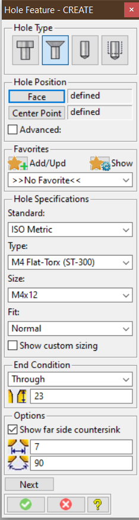
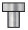

Modeling Extension Module Hole Features
The Hole Feature extension substantialy enhances the built-in Machining module and provides:

A new graphical Hole Feature Tool dialog to allow hole creation and modification in an organized, easy-to-use way, including
- Management of frequently used hole specifications (favorites)
- Simple and advanced user interface
- All hole types accessible from one dialog
Configuration tools to define and manage hole features compliant with company standards. Full support of the Modeling customization infrastructure;
- hole features can be specified at user, site, and company levels.
- Customizable feature label templates
Support for common industry standard hole types
Hole Type(s)  Counterbore Through Holes 
Countersunk Through/Blind Holes 
Drilled Through/Blind Holes Threaded Through/Blind Holes All hole features from the Machining module are available by default
Getting Started
- Extension Module Installation and Startup
- Extension Module Customization Overview
- The Extension Module User Interface
Programming Interfaces
Lisp packages in this module
| Name | Summary |
|---|---|
holewizard |
Primary Lisp package of the HoleWizard Modeling extension module. |